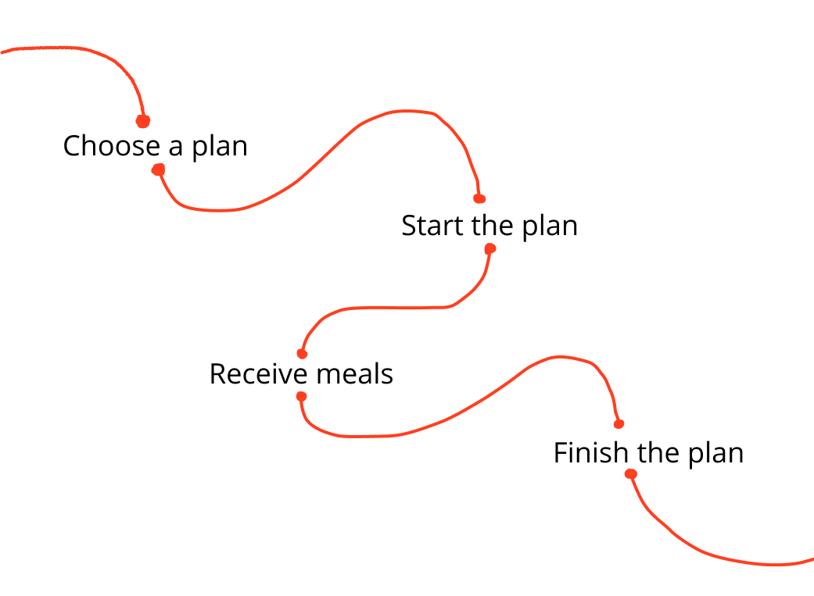
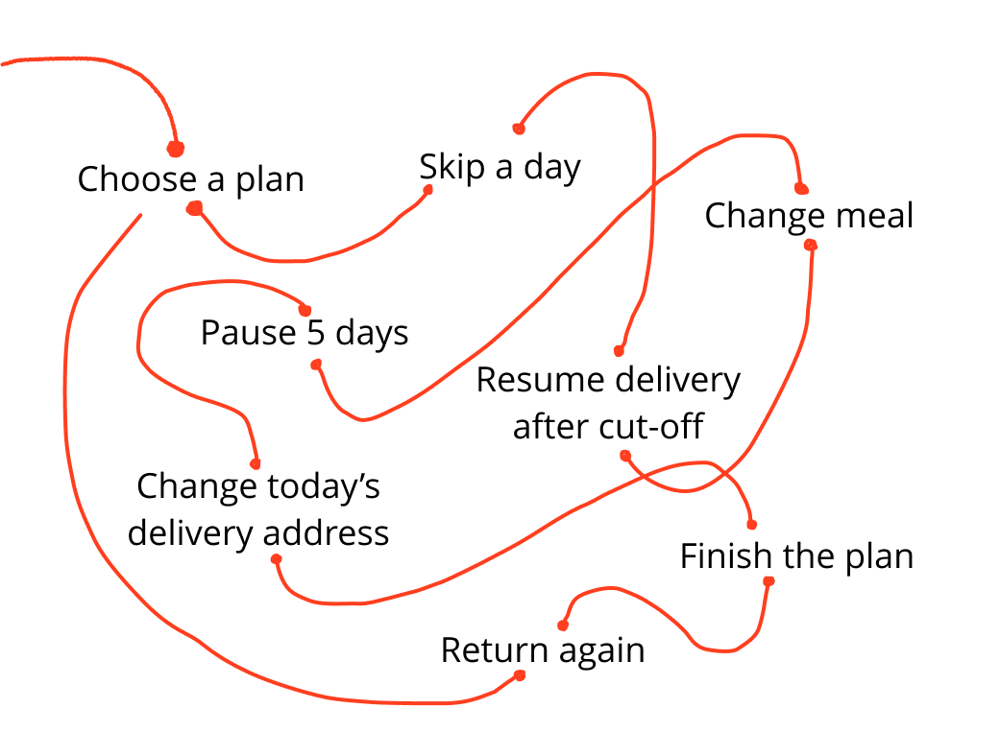

User Goal
Know what meals are coming, when they will arrive, and what can still be changed.
Business Goal
Reduce confusion around meal schedules, cut-offs, and delivery rules.

TL;DR
When I joined, Delicut already had a strong service. The product problem was what happened when customers joined plans late, skipped meals, paused several days or changed delivery addresses. Many of these situations did not yet have a clear product experience.
I helped map these states, simplify the rules behind them and design web and mobile flows that responded clearly to where the customer was in their subscription. The result was a more flexible product system built around real customer behaviour.
Overview
Customers choose a meal plan based on their goals and preferences, receive meals on scheduled days and manage those deliveries through the app. The company wanted to make this experience easier for people who were new to structured meal plans. That meant the product had two jobs. It had to help someone confidently choose and buy the right plan. Then it had to help them live with that plan every day. The second part became much more complex than it first appeared.
The Problem
The original experience followed a clean path but real customers behaved differently.


The challenge was to make these states clear without making the app feel complicated. “What should the home screen do in every possible state of a subscription?”
Goals
Know what meals are coming, when they will arrive, and what can still be changed.
Reduce confusion around meal schedules, cut-offs, and delivery rules.
Skip, resume, change meals, or update delivery details without getting lost.
Make subscription management more self-serve and reduce support dependency.
Keep track of past, current, and upcoming plan activity in one place.
Support retention by making renewal and continued plan management clearer.
Design process
The mobile app was only one part of the Delicut journey. Before opening the app, users had already visited the website, selected a meal plan, entered their details, and completed the subscription process. I reviewed that journey first so the app could continue from what users already knew instead of starting from zero. This helped me understand:
The onboarding flow helped set up the app around the user before they entered the main experience.
It collected key details such as activity level, height, current weight, target weight, and fitness device connection. The goal was to keep this setup simple and useful, without making it feel like a long form.

If the user's plan has not started yet, they do not land on an empty dashboard. Instead, they see when their plan starts, when meals will be assigned, and when the first delivery is expected.
Before designing the main flows, I mapped 27 possible home and delivery states across plan status, selected date, delivery status, meal assignment, and cut-off rules.

Keep scrolling
If today's delivery was already locked, users could see their assigned meals and delivery details, but could not make changes. The interface needed to make that restriction clear without making the screen feel disabled.
Future days were more flexible. Before the cut-off, users could change a meal, skip delivery, resume delivery, or change the delivery address. This was the most action-heavy state, so the priority was making the options easy to find without overcrowding the meal cards.
Past days had a different purpose. Instead of delivery controls, users could review and rate the meals they had received. If the delivery had been skipped, rating was not shown because no meal was delivered.
Key interaction patterns

Users can manage delivery days from a single calendar, making it easy to see which days are active, skipped, or unavailable. This keeps pause and resume actions tied to specific dates instead of making users manage the whole subscription at once.

When a delivery can no longer be changed, the bottom sheet explains exactly why and shows the cut-off time that has passed. This avoids dead-end interactions and makes the rule clear before users try to edit a locked day.
Expiry screen flow
A subscription does not suddenly become irrelevant on its final day. We designed separate states around the end of the plan.

When only a short time remains, the customer can see that their plan is approaching its end. This creates space for renewal before their deliveries stop.
After the plan ends, future meal controls disappear. The product shifts toward one clear next step: Renew plan.
This gave returning customers a way back into Delicut without making the app feel broken or empty.
What I learned
Someone still has to understand it.
For this project, much of my work happened before the final screen: mapping states, finding conflicting rules, asking what should happen next, documenting decisions, and connecting one flow to another.
A designer cannot stop every new idea. But I can help the team understand which ideas solve a real problem, which create new problems, and which should wait.